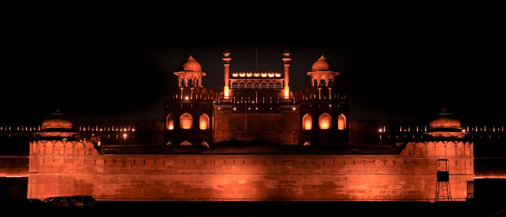
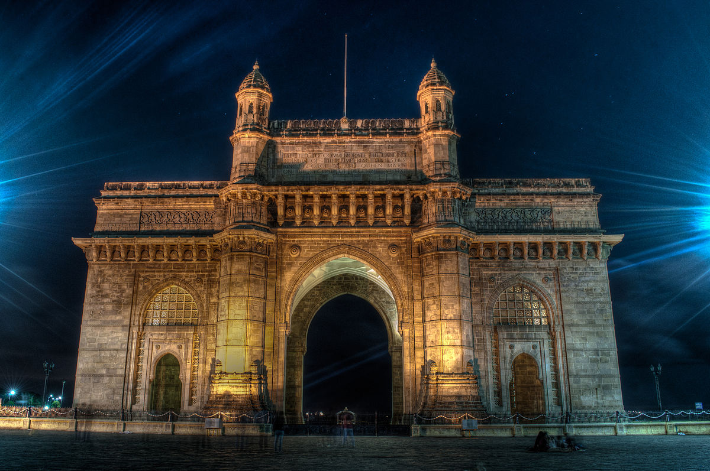
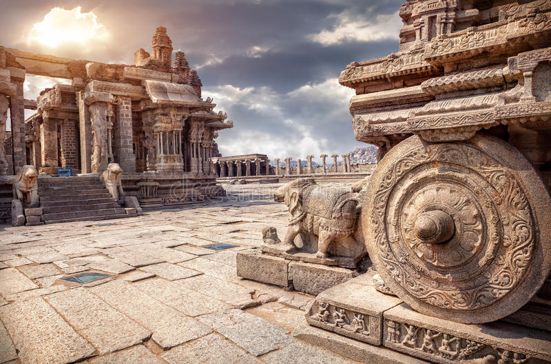

TAJ MAHAL

Taj Mahal, also spelled Tadj Mahall, mausoleum complex in Agra, western Uttar Pradesh state, northern India. The Taj Mahal was built by the Mughal emperor Shah Jahān (reigned 1628-58) to immortalize his wife Mumtaz Mahal (“Chosen One of the Palace”), who died in childbirth in 1631, having been the emperor's inseparable companion since their marriage in 1612. India's most famous and widely recognized building, it is situated in the eastern part of the city on the southern (right) bank of the Yamuna (Jumna) River. Agra Fort (Red Fort), also on the right bank of the Yamuna, is about 1 mile (1.6 km) west of the Taj Mahal.In its harmonious proportions and its fluid incorporation of decorative elements, the Taj Mahal is distinguished as the finest example of Mughal architecture, a blend of Indian, Persian, and Islamic styles. Other attractions include twin mosque buildings (placed symmetrically on either side of the mausoleum), lovely gardens, and a museum. One of the most beautiful structural compositions in the world, the Taj Mahal is also one of the world's most iconic monuments, visited by millions of tourists each year. The complex was designated a UNESCO World Heritage site in 1983.
RED FORT
Red Fort, also called Lal Qalʿah, also spelled Lal Kila or Lal Qila, Mughal fort in Old Delhi, India. It was built by Shah Jahān in the mid-17th century and remains a major tourist attraction. The fort was designated a UNESCO World Heritage site in 2007.The fort's massive red sandstone walls, which stand 75 feet (23 metres) high, enclose a complex of palaces and entertainment halls, projecting balconies, baths and indoor canals, and geometrical gardens, as well as an ornate mosque. Among the most famous structures of the complex are the Hall of Public Audience (Diwan-i-ʿAm), which has 60 red sandstone pillars supporting a flat roof, and the Hall of Private Audience (Diwan-i-Khas), which is smaller and has a pavilion of white marble.
QUTUB MINAR

Quṭb Mīnār, among the tallest minarets in Asia, built in Delhi beginning at the turn of the 13th century by Quṭb al-Dīn Aibak and completed by his successor, Iltutmish.As the mīnār (tower) to the Qūwat-ul-Islām mosque, the Quṭb Mīnār serves the traditional purpose of being the place from which the faithful are called to prayer. An inscription on the tower indicates that it also served as a victory monument.Damaged by lightning and earthquakes in the 14th and 15th centuries, the tower was rebuilt and repaired by local rulers at the time. In the early 16th century, the Lodī ruler Sikandar undertook more-extensive restoration while expanding its top two tiers. The Quṭb Mīnār, as it stands today, is a 72.5-metre (238-foot) fluted sandstone tower with copious marble inlays. Projecting balconies separate five successive stories, each of which is marked by bands of richly carved inscriptions from the Qur'ān. The lowest three tiers are made of alternating red and buff sandstone, the fourth and fifth of marble and sandstone. The tower tapers from 14.3 metres (47 feet) in diameter at the base to 2.75 metres (9 feet) at the top.
GATEWAY OF INDIA
Gateway of India, monument in Mumbai that was completed in 1924.Situated on the Apollo Bunder overlooking the Arabian Sea, the Gateway of India was designed to commemorate the visit in 1911 of King George V and Queen Mary, who had been en route to the durbar being held in Delhi to celebrate their coronation as emperor and empress of India.Built of honey-colored basalt, the Gateway of India resembles a conventional triumphal arch in concept, but architecturally it is Indo-Saracenic in style, modeled on 16th-century Gujarati work. This absorption of Mughal influences was consciously done, with a view to suggesting the link with earlier rulers and thus arguing for the legitimacy of British colonial rule. Intricate latticework decorates the walls, and four turrets surround an imposing central dome that is 50 feet (15 m) in diameter and rises to 85 feet (26 m) high. Side chambers and halls were added to accommodate civic receptions. The building was opened to the public on December 4, 1924, by the viceroy of India, Rufus Isaacs, earl of Reading.
KONARK TEMPLE

Konark, also spelled Konarak, Konarka, or Kanarak, historic town, east-central Odisha state, eastern India, on the Bay of Bengal coast. It is famous for its 13th-century Surya Deula (or Surya Deul), popularly known as the Sun Temple.The town's name is derived from the Sanskrit words kona (“corner”) and arka (“sun”), a reference to the temple, which was dedicated to the Hindu sun god Surya. It was designed to represent his chariot, with 12 huge carved stone wheels and 7 stone horses around its base. The Surya Deula is about 100 feet (30 metres) high and would have surpassed 200 feet (60 metres) in height at its completion.The town and the temple are associated with the legend of Samba, the son of the Hindu deity Krishna, who was cured of leprosy by the sun god's blessings. Evidence suggests that the temple was built by Narasimha I (reigned 1238-64) about 1250. It represents the culmination of the Orissan school of temple architecture. Formerly called the Black Pagoda because of the many shipwrecks that occurred off the coast, the temple was used as a navigation landmark by European mariners sailing to Calcutta (now Kolkata). From the 15th to the 17th century, the temple was sacked various times by Muslim armies. By the 19th century, much of the temple had been weathered and ruined. Under British rule, sections of the temple complex were restored, but much of it remained in ruins. The complex was designated a UNESCO World Heritage site in 1984.
JAGANNATH TEMPLE, PURI
Jagannatha, (Sanskrit: “Lord of the World”) form under which the Hindu god Krishna is worshipped at Puri, Odisha (Orissa), and at Ballabhpur, a suburb of Shrirampur, West Bengal state, India. The 12th-century temple of Jagannatha in Puri towers above the town. In its sanctuary, wooden images represent Jagannatha, his brother Balabhadra (Balarama), and his sister Subhadra. Modern representations made in Puri of the 10 avatars (incarnations) of Vishnu often show Jagannatha as one of the 10 in place of the more usually accepted Buddha.The most important of the numerous yearly festivals is the Chariot Festival (Rathayatra), which takes place on the second day of the bright fortnight of Ashadha (June-July). The image is placed in a wagon so heavy that the efforts of hundreds of devotees are required to move it, and it is dragged through deep sand to the country house of the god. The English word juggernaut, with its connotation of a force crushing whatever is in its path, is derived from this festival.

JANTAR MANTAR
The Jantar Mantar is located in the modern city of New Delhi. It consists of 13 architectural astronomy instruments. The site is one of five built by Maharaja Jai Singh II of Jaipur, from 1724 onwards, as he was given by Mughal emperor Muhammad Shah the task of revising the calendar and astronomical tables. There is a plaque fixed on one of the structures in the Jantar Mantar observatory in New Delhi that was placed there in 1910 mistakenly dating the construction of the complex to the year 1710. Later research, though, suggests 1724 as the actual year of construction. The primary purpose of the observatory was to compile astronomical tables, and to predict the times and movements of the sun, moon and planets. Some of these purposes nowadays would be classified asastronomy. Completed in 1724, the Delhi Jantar Mantar had decayed considerably by 1867.
HAWA MAHAL
Hawa Mahal, palace in the Indian city of Jaipur that was designed by Lal Chand Ustad and completed in 1799.Regarded as one of the iconic symbols of the state of Rajasthan, the Hawa Mahal (Palace of Winds) sits in the center of Rajasthan's capital, Jaipur. Built as an extension to the women's chambers of the city palace, it was intended as a viewing screen. Through this screen—a kind of architectural veil—women of the royal household could freely view the bazaar and its vibrant proceedings unseen. The term mahal in this context is almost misleading, as the building was never meant to serve as a residence. The five-story building is actually quite shallow, with the top three stories being barely a room deep and containing chambers in which the women sat.In keeping with the visual language of the “Pink City” of Jaipur, the Hawa Mahal is built entirely in red sandstone, which in the sunlight glows with a pink hue. It is often identified as the world's tallest building constructed without a foundation

DAKHINESWAR KALI TEMPLE

Dakshineswar Kali Temple is a Hindu navaratna temple located at Dakshineswar, Kolkata, West Bengal, India. Situated on the eastern bank of the Hooghly River, the presiding deity of the temple is Bhavatarini, a form of Parashakti Adya Kali, otherwise known as Adishakti Kalika.The temple was built in 1855 by Rani Rashmoni, a Zamindar, philanthropist and a devotee of Kali. The temple is known for its association with Ramakrishna and Ma Sarada Devi, mystics of 19th Century Bengal. The main temple was inspired by Navaratna style Radhakanta temple, built by Ramnath Mondal of Tollygunge. The temple compound, apart from the nine-spired main temple, contains a large courtyard surrounding the temple, with rooms along the boundary walls. There are twelve shrines dedicated to Shiva—Kali's consort—along the riverfront, a temple to Radha-Krishna, a bathing ghat on the river, a shrine dedicated to Rani Rashmoni. 'Nahabat', the chamber in the northwestern corner just beyond the last of the Shiva temples, is where Ramakrishna and Maa Sarada spent a considerable part of their lives.
RAMESWARAM TEMPLE
The great temple of Rameswaram was built in the 17th century on the traditional site said to be sanctified by the god Rama's footprints when he crossed the island on his journey to rescue his wife, Sita, from the demon Ravana.The temple is built on rising ground above a small lake. Quadrangular in shape, it is about 1,000 feet (305 metres) long and 650 feet (198 metres) wide. It has a 100-foot- (30-metre-) high gopura, or tower gateway, but the temple's outstanding features are its 700-foot- (213-metre-) long pillared halls, which open into richly decorated transverse galleries. The temple is perhaps the finest example of Dravidian architecture. Sacred to both Vaishnavas and Shaivas, it is the most holy place for Hindus in India after the city of Varanasi. Pop. (2001) 37,968.

GOLDEN TEMPLE, AMRITSAR

Harmandir Sahib, Harmandir also spelled Harimandir, also called Darbar Sahib (Punjabi: “Sacred Audience”) or Golden Temple, the chief gurdwara, or house of worship, of Sikhism and the Sikhs' most important pilgrimage site. It is located in the city of Amritsar, Punjab state, northwestern India.The first Harmandir Sahib was built in 1604 by Arjan, the fifth Sikh Guru, who symbolically had it placed on a lower level so that even the humblest had to step down to enter it. He also included entrances on all four sides, signifying that it was open to worshippers of all castes and creeds. The foundation stone was laid by Mian Mīr, a Muslim divine of Lahore (now in Pakistan). The temple was destroyed several times by Afghan invaders and was finally rebuilt in marble and copper overlaid with gold foil during the reign (1801-39) of Maharaja Ranjit Singh. The structure thus became known as the Golden Temple.
HAMPI
Hampi (Kannada: ಹಂಪೆ, Hampe) refers to a village in northern Karnataka. The name "Hampi" comes from the anglicized version of the Kannada Hampe (derived from Pampa, the ancient name for the Tungabhadra river). Over the years, it has also been referred to as Vijayanagara and Virupakshapura (from Virupaksha, the patron deity of the Vijayanagara rulers).Hampi also goes by the name "The City of Ruins." UNESCO has designated the Vijayanagara ruins as a World Heritage Site within the Group of Monuments at Hampi title.Hampi identifies with the mythological Kishkindha, the Vanara (monkey) kingdom which finds mention in the Ramayana. The first historical settlements in Hampi date to 1 C.E. Hampi formed one of the centers of the capital of the Vijayanagara Empire from 1336 to 1565. Muslim emperors destroyed it. The founders of Hampi selected the site for its strategic location, bounded by the torrential Tungabhadra river on one side and surrounded by defensible hills on the other three sides.
